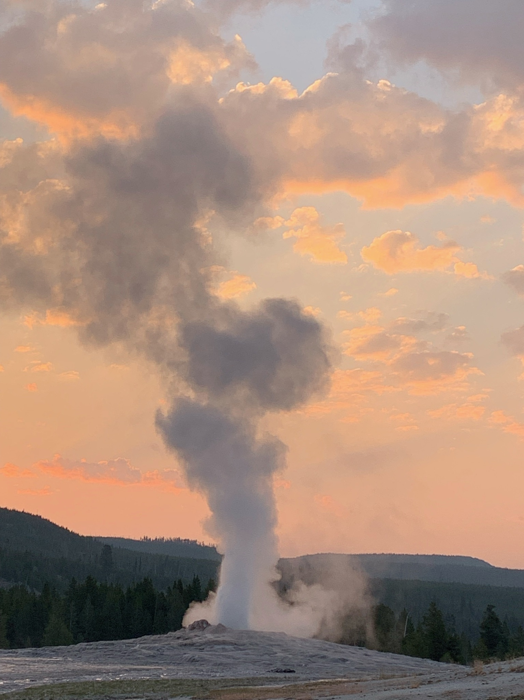

I love exploring the outdoors and getting to travel to unique places around the world. Here are some photos from some of my favorite places I've traveled to.
On a trip to see some national parks in Utah and Arizona, my family took a day to kayak through Antelope Canyon, a well known slot canyon with lots of narrow tunnels.
This is a photo of me in front of the Grand Canyon of Yellowstone overlook. While it is a new canyon compared to some other ones, it was such a pretty view with vibrant colors and a large waterfall.

Also, on my trip to Yellowstone, we went to see Old Faithful multiple times. This photo is from an early morning trip as the sun was just rising.
This photo is from my trip to Florence, Italy last summer. We went to Osteria Pastella, which is a restuarant that is famous for melting the cheese for your pasta in a giant cheese wheel right at your table.
While in Naxos, Greece, I visited the ruins of the Temple of Apollo. It was a wonderful place to watch the sun set.